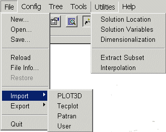
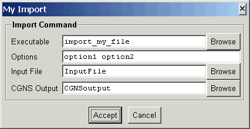
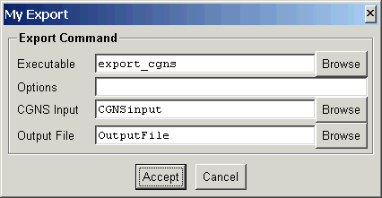
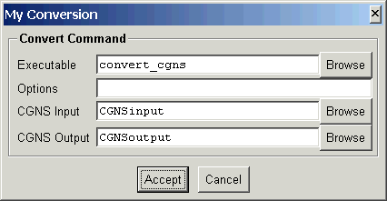
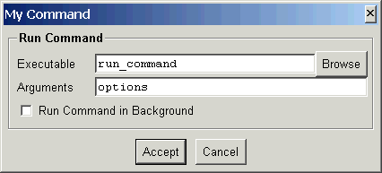

Customization
CGNSview currently allows a certain amount of customization by way of
specifying new menu items. This is done through a menu file (a file with
the extension mnu), which is read at startup. When the menu items
are selected, a user-defined TCL script and/or external program will be
executed.
The following is an example of a menu file (utilities.mnu), which
comes from the CGNS utility programs package.
File:separator
# File->Import menu
File:Import:PLOT3D import plot3d_to_cgns plot3d_import plot3d.tcl
File:Import:Tecplot import tecplot_to_cgns tecplot_import tecplot.tcl
File:Import:Patran import patran_to_cgns patran_import patran.tcl
File:Import:User import
# File->Export menu
File:Export:PLOT3D export cgns_to_plot3d plot3d_export plot3d.tcl
File:Export:Tecplot export cgns_to_tecplot tecplot_export tecplot.tcl
File:Export:User export
# Utilities
"Utilities:Solution Location" convert convert_location \
convert_location convert.tcl
"Utilities:Solution Variables" convert convert_variables \
convert_variables convert.tcl
Utilities:Dimensionalization convert convert_dataclass \
convert_dimensional convert.tcl
Utilities:separator
"Utilities:Extract Subset" convert extract_subset extract_subset util.tcl
Utilities:Interpolation convert interpolate_cgns interpolate_cgns util.tcl
This adds two cascade menus to the File menu (Import and
Export),
and creates a new toplevel menu item, Utilities, as shown below.

Format
Each new menu entry is specified as
menu type command TCLscript TCLfile
where menu is required and the others are optional. The values are
white-space separated, so an input that contains spaces must be enclosed
in double-quotes ("). Blank lines and comments in the file are ignored
and an input line may be continued to the next line with the back-slash
character (\) at the end of the line. Comments are indicated with the #
character, which causes everything to the end of the line to be ignored.
-
menu
-
This specifies the new menu item to be created. The menu hierarchy is given
by a colon (:) separated list of menu items. The last element in the list
is the label for the new menu item. If the last item is separator,
then a separator bar is created in the parent menu. If the list contains
white-space, then it must be enclosed in double-quotes ("). See the example
above for clarification of how the menu specification relates to the created
menu item.
-
type
-
This identifies the type of menu item. This identifier is used to define
the default panel used if a TCL script is not specified and how the menu
item is handled by CGNSview. The currently recognized types are import,
export,
convert utility, and command. The default panel and behavior
for each of these is described below under Menu Types.
If type does not match any of the recognized types, it is assumed
to be command.
-
command
-
The name of the executable and command line options, if any. If a full
path to the executable is not given, then CGNSview will search for it
first in the directory where CGNSview is installed, then in subdirectories
bin
and $ARCH (ARCH environment variable), and lastly in the directories
given by the PATH environment variable. If command line options
are to be given, these should be given after the executable name, and the
entire specification enclosed in double-quotes (").
-
TCLscript
-
The name of aTCL procedure to invoke for this menu item. This allows a
custom panel to be created, which will be displayed when the menu item
is selected. If not specified, then one of the default panels will be displayed,
based on the menu type.
-
TCLfile
-
The name of the file containing TCLscript. If specified, this file
will be sourced before executing the script. As an alternative, the TCLfile
may be specified in the tclIndex file in the directory containing
the CGNSview scripts, following standard TCL/TK practices.
Menu Types
The following menu types are currently recognized by CGNSview. The default
panels shown for each type will be invoked by CGNSview in the case that
a TCL script has not been specified for the menu item.
import
Import routines read a non-CGNS file, and convert it to a CGNS
file. An example of this is the plot3d_to_cgns program, which reads
a PLOT3D file and writes out a CGNS file. This menu item will always be
enabled in the CGNSview GUI. The following shows the default panel for
import menu items.

The specification in the menu file in this case was
"Test:My Import" import "import_my_file option1 option2"
When the Accept button is selected,
the import command will be executed as
import_my_file option1 option2 InputFile CGNSoutput
If the command is successfull, then the CGNSview will read and display
the CGNS file.
export
Export routines read a CGNS file, and convert it to a non-CGNS
format. An example of this is the cgns_to_plot3d program, which
reads a CGNS file and writes a PLOT3D file. This menu item will only be
enabled after a CGNS file has been read into CGNSview. The following shows
the default panel for export menu items.

The specification in the menu file in this case was
"Test:My Export" export export_cgns
When the Accept button is selected,
the export command will be executed as
export_cgns CGNSinput OutputFile
If any options are specified, they will appear after the executable name
and before the CGNS input file name.
convert
This class of routines read a CGNS file, operate on it in some
way, and then write a new CGNS file. An example is the convert_location
utility program which converts between cell-center and vertex based solutions.
This menu item will only be enabled after a CGNS file has been read into
CGNSview. The following shows the default panel for convert menu items.

The specification in the menu file in this case was
"Test:My Conversion" convert convert_cgns
When the Accept button is selected,
the convert command will be executed as
convert_cgns CGNSinput CGNSoutput
If any options are specified, they will appear after the executable name
and before the CGNS input file name.
utility
A utility processes a CGNS file, such as the cgnscheck
program which reads a CGNS file and checks for SIDS compliance. This menu
item will only be enabled after a CGNS file has been read into CGNSview.
The following shows the default panel for utility menu items.

The specification in the menu file in this case was
"Test:My Utility" utility print_cgns
When the Accept button is selected,
the utility command will be executed as
print_cgns CGNSinput
If any options are specified, they will appear after the executable name
and before the CGNS input file name. If Run Command in Background
is selected, then CGNSview will execute the command, but not wait for
the command to finish.
command
This is the default behavior for a menu item if the type is
not one of import, export, convert or utility.
A command is simply executed by CGNSview and the menu item is always enabled.
The following shows the default panel for command menu items.

The specification in the menu file in this case was
"Test:My Command" command "run_command options"
When the Accept button is selected,
the command will be executed as
run_command options
If Run Command in Background is selected, then CGNSview will execute
the command, but not wait for the command to finish.
[previous] [index]
[next]